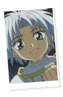

|
I N F O R M A T I O N » B A S I C S

Name: Mannen
DOB: November 25th
Age: approximately 12
Blood Type: B
Hair color: white
Eye color: blue
Liefe Knight of: ice/snow
Attack: Ice Arcubus
Seiyuu: Yajima Akiko
To summarize, Mannen is one of the younger Liefe Knights out of the seven, with the power to manipulate ice. He could probably be seen as the leader of the younger Liefe Knights, being the spunky, energetic and strong-willed character that he is, he easily overpowers the other two young knights. A large reason Mannen acts like sort of a brat is most likely due to his eagerness to be included with the older knights. Mannen, along with the other young knights, is often left out of the conversation or not included in discussions on the more serious topics. Mannen has the desire to be treated maturely and such, as most pre-teens and teens wish to be treated by adults. He's also willing to take responsibility and to take some of the harder tasks, in order to show that he is capable of anything that the others are capable of. More often than not though, he gets neglected in discussions, or left with a simple task to do instead of the harder ones he had hoped for. As the series progresses, one can see that even though Mannen is left to do a simple task, it's nevertheless an important one, and it's crucial for him and the other young knights to cooperate for full affectiveness of all the knights' powers.
ainoyumeNET 2002 Trinity. All rights reserved. 
|
INFORMATION
/basics
/personality
/thoughts
/partners
/power
/voice
/quotations
|
MEDIA
/anime
/manga
/wallpapers
|
SITE RELATED
/updates
/links out
/link Ice Brat!
/credits
/contact me
|